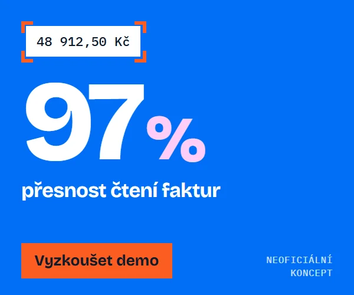
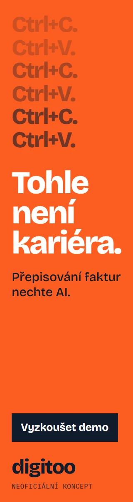
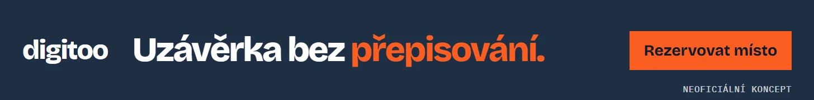
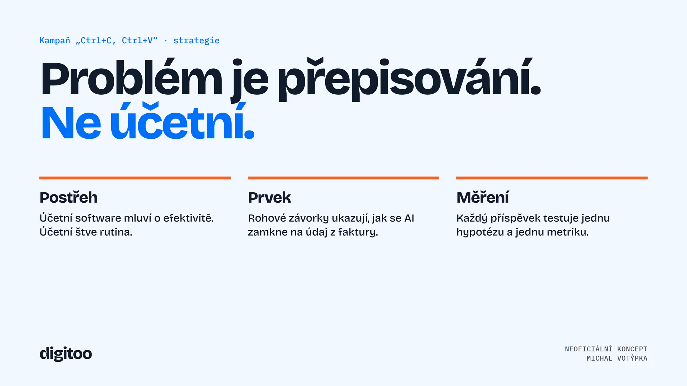
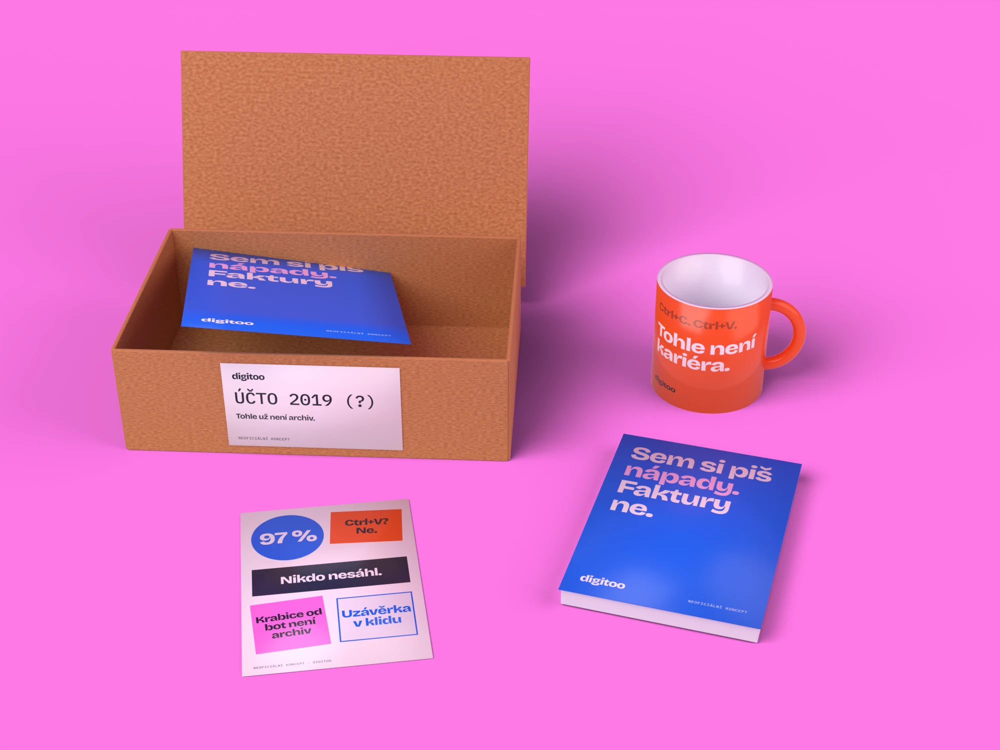
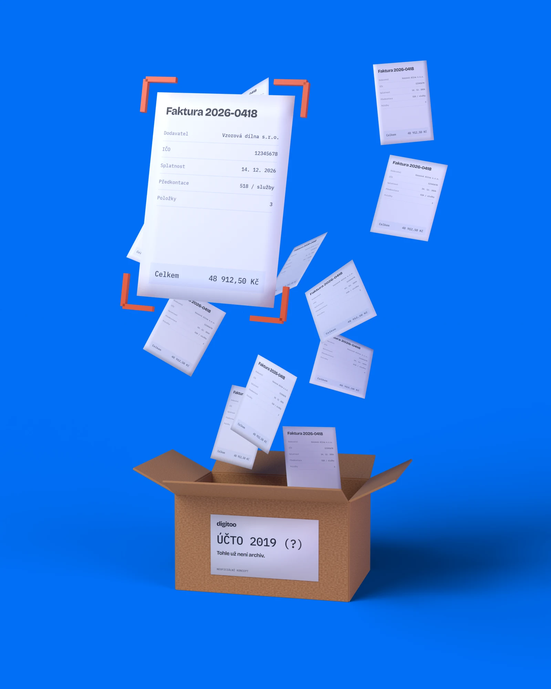

00:00:00:00 · grafika / motion / AI
Grafika, motion a AI. Od prvního nápadu po finální výstup.
Navrhuji vizuální obsah a dělám motion design. K tomu si stavím vlastní AI nástroje, takže z nápadu je hotový výstup rychleji. Výsledek pořád hlídám okem.
Podívat se na koncept pro Digitoo00:00:12:00 · 01 · Social media, motion, digital
„Ctrl+C, Ctrl+V není kariéra.“
Poctivě: tohle je můj neoficiální koncept, ne zakázka. Digitoo ho nezadalo ani neschválilo. Čísla jsem převzal z digitoo.ai, doklady jsou smyšlené a logo je jen sázený text. Vzniklo to ve spolupráci s AI agentem (Claude Code): agent psal kód a rendery, já vedl směr a vybíral výsledky.
Účetní software obvykle mluví o efektivitě. Já bych mluvil o tom, co účetní opravdu štve: o přepisování. Kampaň je drzá k rutině, ne k účetním.
Celý systém stojí na jednom prvku. Rohové závorky ukazují, jak se AI „zamkne“ na údaj z faktury, a stejný prvek funguje v příspěvku, ve videu i na landing page.
LinkedIn kampaň: 5 příspěvků


Karusel: linka běží přes všech 5 slidů


Promo video: 20 s, 120 BPM
Střih i zvuk sedí na stejnou mřížku. Rychlé údery kopírují rutinu, po slově „Stop“ přijde ticho a každý nalezený údaj má vlastní tón.
Animace je napsaná v HTML a vyrenderovaná po snímcích. Zvuk je generovaný skriptem, takže video nepotřebuje žádnou licencovanou hudbu.
Digital

Funkční šablona: vyzkoušejte si ji
Inzerát chce šablony, tak tady jedna běží. Přepište text, změňte formát a stáhněte PNG. Velikost nadpisu se dopočítá sama, takže příspěvek drží systém i bez grafika.
Bannery: jedna myšlenka ve třech formátech



Prezentace: strategie kampaně na jednom slidu

Print a dárek: krabice od bot, která je pointa

Dárek pro klienty navazuje na příspěvek „Krabice od bot není archiv“. Přijde v krabici s nápisem ÚČTO 2019 (?) a uvnitř je zápisník, hrnek a arch nálepek.
Grafika vznikla jako tiskové podklady a scéna je postavená a vyrenderovaná skriptem v Blenderu. Tiskové podklady slouží zároveň jako textury 3D scény.

Jak bych měřil, jestli kampaň funguje
| Příspěvek | Hypotéza | Hlavní metrika |
|---|---|---|
| Ctrl+C. Ctrl+V. | Drzý humor si účetní přepošlou mezi sebou. | Sdílení a komentáře na 1 000 zobrazení |
| 97 % | Konkrétní číslo přivede lidi s reálným zájmem. | Míra prokliku na demo |
| Nikdo nesáhl | Ukázka faktury vysvětlí produkt bez textu. | Dokoukání a čas na příspěvku |
| 400+ hodin | Reference osloví manažery, ne jen účetní. | Podíl manažerských rolí v zásahu |
| Karusel | Lidé dojdou až na poslední slide s postupem. | Podíl dokončení karuselu |
Plán před spuštěním, ne výsledky. Každý příspěvek testuje jednu věc a vítěznou variantu bych rozvinul do další série.
00:00:24:00 · 02 · Motion design a střih
Anime edity z vlastního enginu
Osobní projekt, ne komerční zakázka. Střih drží rytmus písně a typografie nese emoci. Engine vezme epizodu a píseň, najde drop a připraví střih, efekty i zvuk.
The Honored One Has Awakened
Rychlý střih na beat a sjednocené barevné ladění.
Další motion projekt
Příběhový edit: titulky po slovech a střih vedou emoci. Odkaz začíná ve 40. sekundě.
- 76 493
- zhlédnutí
- 103
- videí na YouTube
- 4
- kanály
- 0,67 USD
- cloudový render 12 editů
Zhlédnutí, videa a kanály: stav k 21. 10. 2026 z vlastního dashboardu. Zatím malé publikum (59 odběratelů), hlavně testovací data pro další verze.
Anime záběry a hudba patří jejich vlastníkům. Fanouškovský projekt, videa jsou přehrávaná přímo z YouTube.
00:00:36:00 · 03 · AI workflow
AI tam, kde šetří čas. Rozhodnutí u člověka.
- AnalýzaSkript rozdělí video na záběry a píseň na beaty a dropy.
- AI tříděníModel označí postavy a typ záběru. Tady AI šetří nejvíc ruční práce.
- PlánVzniká čitelný JSON plán, který jde upravit ručně.
- RenderEfekty, text a zvuk doplní lokální kód, náročné dávky běží v cloudu.
- KontrolaVarianty porovnávám naslepo. Co neprojde, se nepublikuje.
- DataPublikace je naplánovaná a dashboard sleduje výsledky.
Python, přes 160 skriptů. Stejný přístup je použitelný i pro firemní obsah: šablona, datový zdroj, dávkový export, kontrola.
Herní vizuály z FolkIdle: generování je jen začátek


FolkIdle je moje idle RPG ze slovanského folklóru. Vizuály vznikají přes AI na klíčovacím pozadí. Pak je ořezávám, sjednocuji a vracím, když nesedí se zbytkem hry.

00:00:48:00 · 04 · Grafika pro reálný provoz
Atletický oddíl: pravidelný obsah s termínem
Pro TJ Jiskra Nový Bor dělám grafiky a videa ze závodů. Výřezy závodníků skládám do lokace závodu v GIMPu a střihám v DaVinci Resolve.
Opakovanou práci jsem převedl na skript: z jednoho JSON souboru vznikne výsledkové video s kartami, přechody a střihem na hudbu. Sezónní varianta se pak dělá výměnou stylu.
Ukázky tady nezveřejňuji, protože jsou na nich závodníci včetně dětí.
00:01:00:00 · 05 · Spolupráce
Jak bych pracoval
Systém
Nejdřív šablony a pravidla, aby další výstupy byly rychlejší a konzistentní.
Data
Sledovat, co funguje, a podle toho upravovat další sérii.
Vlastní nápady
Nečekat jen na zadání. Přinášet koncepty, které značku posouvají.
Nástroje
GIMP · DaVinci Resolve · Python · HTML/CSS · Blender (přes AI agenta) · generativní AI · Claude Code. Figmu se teprve učím.